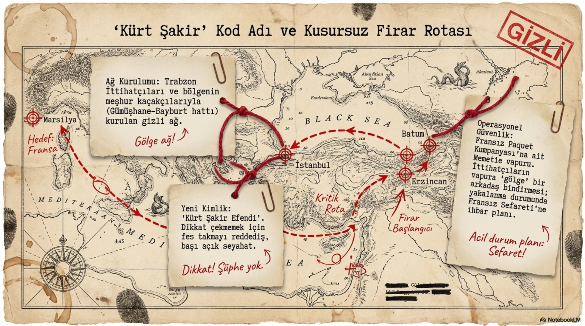
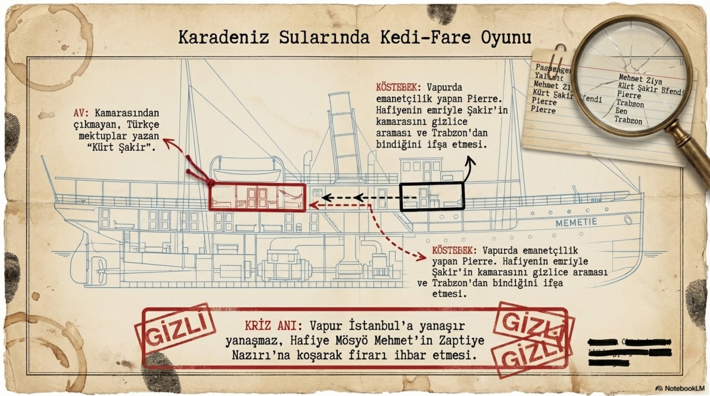
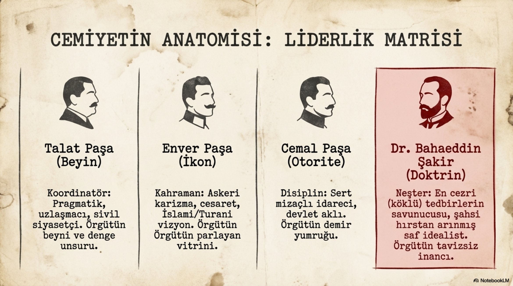
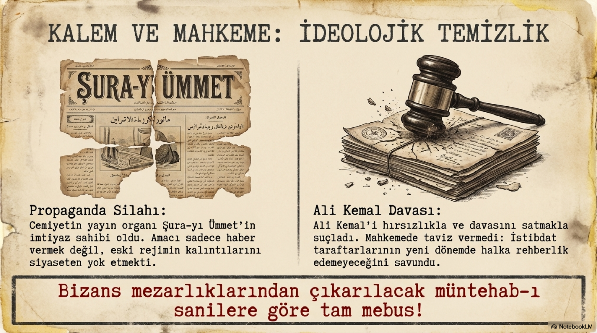
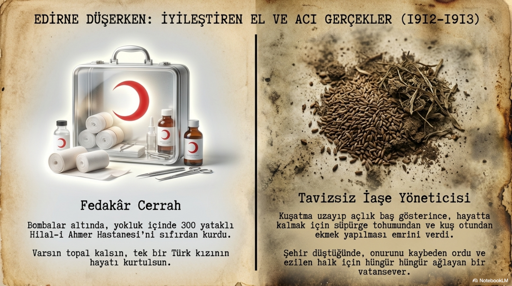
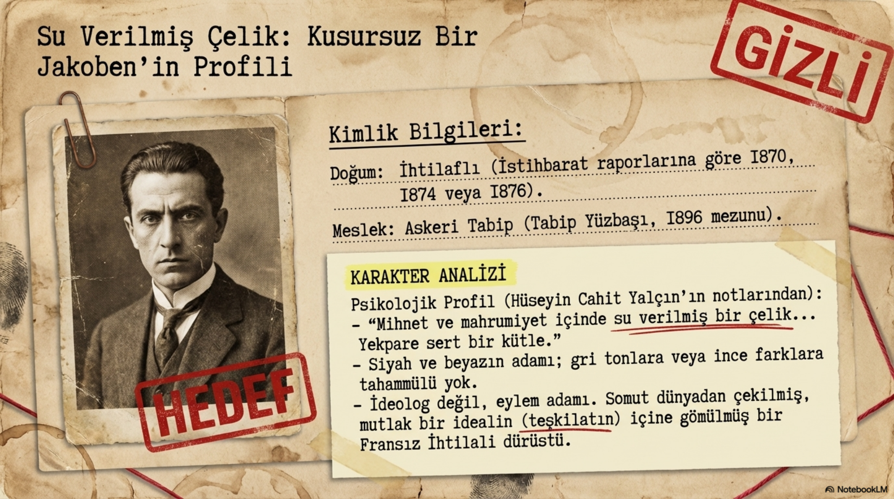

Bölüm 01
Dağılmış Örgüte İskelet Takan Doktor
İttihat ve Terakki tarihini kişiler üzerinden okumak istiyorsak Bahaeddin Şakir’i atlayamayız. Çünkü o, hareketin yalnızca bir üyesi değil, özellikle 1905 sonrasında yeniden ayağa kalkmasında belirleyici isimlerden biridir. Ahmed Rıza fikir ve yayın tarafını, Dr. Nâzım seyyah komiteci ve yeraltı hattını temsil ediyorsa, Bahaeddin Şakir teşkilatın kas sistemini temsil eder. Kimin nerede duracağı, hangi şubenin ne yapacağı, gazetenin nasıl basılacağı, mühürlerin nasıl dağıtılacağı, yazışmanın nasıl yürütüleceği, Cemiyetin gevşek bir muhalif çevreden disiplinli bir örgüte nasıl dönüşeceği onun alanıdır.
Onun için kullanılan ‘jakoben’ benzetmesi boşuna değildir. Bu kelimeyi bugünün siyasi kavgasına çekmeden düşünmek gerekir. Buradaki jakobenlik, toplumu tepeden tırnağa değiştirme arzusunu, kararsızlığa tahammülsüzlüğü, ideal uğruna sert tedbirlere yatkınlığı anlatır. Bahaeddin Şakir’in zihninde hürriyet romantik bir kelime olarak kalmaz; örgüt, disiplin, propaganda, yargı, basın ve gerektiğinde baskı mekanizmasıyla birleşir. İşin can yakan tarafı da burada başlar.
Bahaeddin Şakir 1870’lerin başında doğdu. Eğitim yolculuğu onu İstanbul Askerî Tıbbiye İdadisi’ne, ardından Mekteb-i Tıbbiye-i Şahane’ye taşıdı. 1896’da Tıbbiye-i Askeriye’den mezun olduğunda artık Tabip Yüzbaşı idi. Fakat Tıbbiye ona yalnızca meslek vermedi. O okul aynı zamanda dönemin en hareketli siyasi laboratuvarlarından biriydi. Askerî okullar Batı’daki bilime, modernleşme fikrine ve devletin çöküşünü durdurma arayışına en açık kurumlardı. Bu yüzden İttihatçılığın bu çevrede mayalanması tesadüf değildi. Bahaeddin Şakir de o mayanın sertleşmiş hallerinden biri oldu.
Tıbbiye’de İttihâd-ı Osmanî çevresiyle tanıştı. Fakat onu diğerlerinden ayıran şey, mezuniyet sonrasında aldığı görevlerin olağanüstü siyasi imkânlar taşımasıydı. Şehzadelerin doktorluğu sadece tıbbi bir görev değildi. Abdülhamid devrinde şehzadeler izole yaşıyor, gözetim altında tutuluyor, dış dünya ile temasları sınırlı kalıyordu. Bu durumda hususi doktor, saray duvarlarının içinden dışarıya açılan nadir kanallardan biri haline geliyordu. Bahaeddin Şakir bu kanalın önemini gördü.
Bölüm 02
Şehzade Doktorluğu: Stetoskopun Arkasındaki Siyaset
Bahaeddin Şakir önce Şehzade Şevket Efendi’nin, ardından Şehzade Yusuf İzzeddin Efendi’nin doktorluğunu yaptı. Görünürde görev basitti: sağlıkla ilgilenmek. Fakat dönemin havasında hiçbir şey sadece göründüğü şey değildi. Yusuf İzzeddin, Abdülaziz’in oğlu olarak taht ihtimali taşıyan, ruh hali dalgalı, içine kapanık ama aynı zamanda siyasi anlamı yüksek bir figürdü. İttihatçılar açısından böyle bir şehzadeye yakın olmak, Abdülhamid sonrasına dair ihtimalleri diri tutmak demekti.
Bahaeddin Şakir’in burada yaptığı şey çok ince bir siyasettir. Bir yandan doktor olarak güven verir, bir yandan şehzadenin zihnine yavaş yavaş siyasi ihtimali işler. Her yerde hafiyelerin olduğunu bildiği için açık konuşmaz, tahta dair bahisleri gerektiğinde kapatır, gerektiğinde ima ile yürütür. Şehzadenin maddi imkânları da İttihatçılar için önemlidir. İstanbul’daki fakir öğrencilere ve yurtdışındaki faaliyetlere destek sağlanması için bu çevre kullanılmaya çalışılır.
Fakat Bahaeddin Şakir’in hayatında siyaset kadar kişisel fırtına da vardır. Onu Erzincan sürgününe götüren sebeplerden biri yasak aşk hikâyesidir. Aşık olduğu kadın, Abdülhamid’in çevresindeki güçlü isimlerden Serkurenç Tahir Paşa’nın eşi Cenan Hanım’dı. Bu ilişki, yıllar içinde siyasi gölgenin önüne geçecek kadar konuşuldu. Fakat sürgünün tek sebebi bu değildi. Yusuf İzzeddin çevresindeki İttihatçı temaslar, Ahmed Celâleddin Paşa’nın köşküne gidip gelmesi, Şûrâ-yı Ümmet için para temini, şehzade hakkında Avrupa’da yayımlanan yazılar ve Yıldız’a ulaşan jurnaller birleşince Bahaeddin Şakir hedef haline geldi.
Bir gün tutuklandı, Bekirağa Bölüğü’ne götürüldü ve ardından Erzincan’a sürüldü. Erzincan onun için son durak olmadı; aksine asıl hikâyenin sıçrama tahtası oldu. Çünkü oradan kaçacak, İstanbul üzerinden Fransız bandıralı bir vapura binecek, Yıldız’ın elinden son anda sıyrılacak ve Paris’e ulaşacaktı.
Bölüm 03
Kusursuz Firar: Erzincan’dan Paris’e
Bahaeddin Şakir’in firarı, İttihatçı tarihinin en sinematik sahnelerinden biridir. Erzincan’dan Trabzon’a, oradan Batum’a uzanan hat; sahte kimlik, vapur bağlantıları, takipçiler, İstanbul’da demirleyen gemi, Fransız konsolosluğu üzerinden yürüyen baskılar... Bu hikâyede hem macera var hem de Abdülhamid idaresinin muhalifleri yakalamak için nasıl çok kanallı çalıştığını gösteren ciddi bir devlet refleksi var.

İstanbul’a gelen Fransız bandıralı vapurda Bahaeddin Şakir’in bulunduğu anlaşıldığında Osmanlı makamları onu indirmek için harekete geçti. İşin ilginç tarafı, onu siyasi suçtan değil, Erzincan Guraba Hastanesi’nin parasını çalmak gibi adi bir suç isnadıyla indirmeye çalışmalarıdır. Bu da Abdülhamid siyasetinin pratik zekâsını gösterir: Siyasi davadan alamıyorsan hırsızlık suçlamasıyla dene. Fakat Fransız kaptan Bahaeddin Şakir’i teslim etmedi. Zaptiye Nezareti’nin girişimleri sonuçsuz kaldı ve vapur, hafiyelerin şaşkın bakışları arasında yoluna devam etti.
Bu kaçıştan sonra Bahaeddin Şakir önce Marsilya’ya, ardından Paris’e ulaştı. Paris’e vardığında karşılaştığı manzara beklediği gibi değildi. Jön Türk hareketi parçalanmış, gruplara ayrılmış, herkes birbirinden şüphe eder hale gelmişti. Ahmed Rıza hattı, Prens Sabahaddin hattı, Ahmed Celâleddin Paşa çevresi, Mısır ve Paris arasındaki çekişmeler... Memlekette insanlar Avrupa’daki hürriyetçileri büyük bir umutla hayal ederken, Avrupa’daki gerçek tablo kırık dökük bir muhalefet pazarını andırıyordu.
Bahaeddin Şakir bu dağınıklığı görünce geri çekilmedi. Tam tersine, burayı yeniden kurmak gerektiğine inandı. İlk başta Ahmed Celâleddin Paşa ve Diran Kelekyan çevresinin etkisinde kaldı. Çünkü Avrupa’ya kaçışında onlardan destek görmüştü. Fakat kısa sürede İttihatçıların eski serhafiye Ahmed Celâleddin Paşa’nın liderliğini kabul etmeyeceği anlaşıldı. Bir hareket yıllarca Abdülhamid’in hafiyeleriyle boğuşmuşken, eski bir serhafiyenin emrine girmeyi kendi haysiyetine aykırı buluyordu. Bahaeddin Şakir de bu karmaşanın içinde kendi çizgisini buldu.

Bölüm 04
Dr. Nâzım ile Buluşma: İki Doktor, Bir Yeni Sistem
Paris’te Dr. Nâzım ile Bahaeddin Şakir’in buluşması, İttihatçılığın kader anlarından biridir. Başlangıçta Dr. Nâzım ona kuşkuyla baktı; hatta Ahmed Celâleddin Paşa’nın etkisinde olduğu için güvenmedi. Fakat bu kuşku kısa sürede güçlü bir iş birliğine dönüştü. Yahya Kemal’in anlattığı dönüşüm çok çarpıcıdır: Bahaeddin Şakir önce daha hafif, şık, eğlenceye düşkün, kumara meraklı biri gibi görünürken, Dr. Nâzım’ın etkisiyle bambaşka bir dava adamına dönüşür. Nâzım onda bir ihtiras uyandırır, onu kendi sertliğiyle yoğurur ve ortaya bildiğimiz Bahaeddin Şakir çıkar.
Bu cümleyi magazin gibi değil, siyasi psikoloji gibi okumak gerekir. İttihatçılık sadece fikirlerden oluşmadı; karakterlerin birbirini yoğurduğu bir ocaktı. Nâzım’ın inadı, Bahaeddin Şakir’in organizasyon yeteneğiyle birleşince hareket yeniden ivme kazandı. İkisi de fazla felsefi değildi. Fikir insanından çok hareket insanıydılar. Uzun teorilerden ziyade dosya, şube, mühür, gazete, para, yolculuk, bağlantı ve disiplinle ilgileniyorlardı. Meşrutiyet’in anahtarını Paris’te tutan iki doktor ifadesi tam da bu yüzden yerindedir.
Bahaeddin Şakir’in asıl gücü burada ortaya çıktı. Önce taraflar arasındaki ihtilafları azaltmaya çalıştı. Dahili işler şubesini üzerine aldı. Trabzon, Selanik ve Bulgaristan’da yeni şubeler açılması için uğraştı. Cemiyetin bir idarehanesi yokken yazıhane kurdu. Şûrâ-yı Ümmet gazetesinin matbaasını Mısır’dan Paris’e taşımak için hazırlık yaptı. Yeni harfler sipariş edildi. Para bulundu. İstanbul’daki gizli yapıyla bağlantı sürdürüldü. Bunlar kulağa küçük idari işler gibi gelebilir ama dağılmış bir hareketi tekrar örgüte çeviren şey tam olarak budur.
Bölüm 05
Cemiyetin Anatomisi: Nizamname, Mühür, Şube, Disiplin
1906’da Bahaeddin Şakir’in eliyle Cemiyet eski hantal yapısından çıkarılmaya çalışıldı. Makedonya’daki Yunan komiteleri ve Ermeni Taşnak örgütlerinin yapıları incelendi. Bu, dönemin örgüt aklı açısından önemlidir. İttihatçılar yalnızca ideolojik metinlerden değil, sahada çalışan rakip örgütlerden de öğreniyordu. Bahaeddin Şakir, onların çalışma biçimlerini analiz ederek Cemiyete yeni bir nizamname hazırladı. Heyet-i merkeziye yanında iç işler, dış işler, hesap işleri ve yazı işleri gibi birimler oluşturuldu. Şubelere mühürler gönderildi. Denetim için müfettişlik kurumu düşünüldü.

Bu yeni sistemle birlikte İttihatçılık artık yalnızca Paris’te çıkan bir gazetenin çevresi olmaktan çıktı. Şubeleri olan, yazışma ağı olan, parasını takip eden, propagandasını yürüten, disiplinini kurmaya çalışan bir örgüte dönüştü. Bahaeddin Şakir’in önemi burada yatar. O, hareketin duygusunu sistem haline getirdi. Hürriyet isteyen çok kişi vardı; fakat o hürriyet talebini bir örgüt mekanizmasına dönüştürebilen kişi sayısı azdı.
1907’de Paris ile Selanik hattının birleşmesine giden süreçte de bu teşkilat aklı belirleyiciydi. Bahaeddin Şakir’in İstanbul’a yaptığı gizli seyahat, Beyoğlu’nda saklanması, İstanbul’da yeni bir şube kurma girişimleri, Baha Bey ve diğer isimlerle temasları, ardından Dr. Nâzım’ın Selanik’e gönderilmesi, bütün bunlar aynı zincirin halkalarıdır. Cemiyet 1908’e giderken yalnızca ‘hürriyet’ diye bağırmadı; bağlantı kurdu, şube açtı, mektup yazdı, adam taşıdı, kimlik sakladı, para buldu, gazete çıkardı. Bahaeddin Şakir bu mutfağın en çalışkan ellerinden biriydi.
Bölüm 06
Kalem, Mahkeme ve İdeolojik Temizlik
1908’den sonra işin rengi değişti. Meşrutiyet ilan edilmişti ama İttihatçılar için mücadele bitmemişti. Hatta yeni sorun başlamıştı: İktidara yakın olmak, muhalefette olmaktan daha kirli ve daha yıpratıcı bir alandı. Bahaeddin Şakir basın yayın faaliyetleri üzerinden Cemiyetin görüşlerini savunmayı sürdürdü. Şûrâ-yı Ümmet, Tanin ve diğer yayın hatları, İttihatçı siyasetin hem savunma hem saldırı araçlarıydı. Bu dönemde basın, bugünkü anlamda yalnızca haber verme alanı değil, doğrudan iktidar mücadelesinin cephesiydi.

Bahaeddin Şakir eleştiriler karşısında geri çekilen bir karakter değildi. Bildiği ve inandığı şeylerden kolay dönmediği için hem içeride hem dışarıda hedef haline geldi. Onu sevenler gözünde disiplinli, çalışkan ve fedakâr bir teşkilatçıydı. Muhalifleri için ise dar, kindar, uzlaşmaz ve tehlikeli bir komiteciydi. İki tarafın da bir ölçüde haklı olduğu yerler vardır. Çünkü Bahaeddin Şakir’in karakterinde yumuşak geçişlere, orta yollara, ‘biraz da böyle bakalım’ rahatlığına pek yer yoktur.
Bu sertlik, 31 Mart ve sonrasında daha görünür hale geldi. İttihatçılar Meşrutiyet’in geri alınacağı, hareketin ezileceği ve Abdülhamid düzeninin başka bir biçimde döneceği korkusuyla sertleşti. Bahaeddin Şakir gibi isimler için mesele artık sadece siyasi rekabet değildi; varlık-yokluk kavgasıydı. Bu psikoloji, İttihat ve Terakki’nin ilerleyen yıllarda muhalefete, basına ve farklı unsurlara karşı daha tahammülsüz bir çizgiye kaymasında önemli bir etkendir.
Bölüm 07
Edirne Kuşatması: Cerrah, İaşeci, Komiteci
Balkan Harbi sırasında Bahaeddin Şakir’in Edirne’deki faaliyetleri, portresinin en güçlü ve en çelişkili bölümüdür. Hilal-i Ahmer adına Edirne’de hastane kurmakla görevlendirildi. Küçük Zabitan Mektebi 300 yataklı hastane haline getirildi. Malzeme ve personel ulaşımında tren hattının bozulması gibi ciddi zorluklar vardı. Buna rağmen gerekli yetkileri alarak hastaneyi işler hale getirdi. Telsiz telgraflarla hastanenin durumu bildiriliyor, yaralılar kabul ediliyor, personel ve ihtiyaçlar ayarlanıyordu.

Burada Bahaeddin Şakir’i sadece siyasi fanatik diye geçmek haksızlık olur. Kuşatma şartlarında hastane kurmak, yaralı asker ve sivillerle ilgilenmek, bombardıman altında sağlık hizmetini sürdürmek ciddi fedakârlık ister. Cephedeki asker için pamuklu içlik hazırlatması, yaralı küçük bir kızın hayatını kurtarmak için ameliyatta bulunması, hastanenin güvenliği için çabalaması onun doktor tarafını canlı biçimde gösterir. Edirne halkı arasında yaptığı hizmetlerin konuşulması da boşuna değildir.
Ama aynı Edirne’de Bahaeddin Şakir yalnızca doktor değildir. İaşe komisyonunda görev alır, erzak teminiyle ilgilenir, kuşatmanın sonuna doğru şehir yönetiminde olağanüstü bir ağırlık kazanır. Süpürge tohumu ve kuş otu gibi ağır şartların ürünü olan ekmek kararları, şehirdeki açlığın hangi seviyeye geldiğini gösterir. Bu kararlar insani açıdan acıdır; fakat kuşatma ortamı zaten normal ahlak ve normal idare ölçülerini kıran bir ortamdır. Bahaeddin Şakir bu kırılmanın tam ortasındadır.
Edirne düştüğünde onun için her şey yıkılmış gibiydi. Bulgar askerleri Hilal-i Ahmer Hastanesi’ne girmek isteyince göğsüne dayanan süngülere rağmen buna izin vermedi. Daha sonra Bulgar askerleri tarafından odasından alındı, üstünü giymesine bile izin verilmeden sürüklenerek dışarı çıkarıldı. Doktor statüsünde olması nedeniyle esir edilmesi hukuken tartışmalıydı; fakat savaş meydanında hukuk çoğu zaman en erken ölen şeylerden biridir. Bahaeddin Şakir artık esirdi.
Esaret günleri onun karakterindeki soğukkanlı sertliği daha da görünür kıldı. Bulgar subaylarının onu idamla tehdit ettiği bir sahnede ‘Ben de bunu bekliyorum’ diyecek kadar kendini hazırlamış bir adamdan söz ediyoruz. Zindandan eşine yazdığı mektupta yedi aylık kuşatmanın kendisini ihtiyarlattığını söylerken, oğluna ‘baba’dan önce ‘vatan’ kelimesini öğretmesini istemesi onun zihninin özetidir. Bu cümle hem etkileyici hem ürkütücüdür. Çünkü insanın evladına bırakmak istediği ilk kelime ‘vatan’ olduğunda, özel hayat ile siyasi dava arasındaki çizgi tamamen silinmiş demektir.
Bölüm 08
Esaretten Sonra Keskinleşen Akıl
Bahaeddin Şakir 1913’te serbest bırakılıp İstanbul’a döndüğünde artık eski Bahaeddin Şakir değildi. Edirne kuşatması, şehrin düşüşü, esaret, aşağılanma ve Balkan bozgunu onun dünyaya bakışını daha da sertleştirdi. İttihatçıların önemli bir kısmı için Balkan yenilgisi yalnızca toprak kaybı değil, Osmanlı’nın son uyarısıydı. Rumeli’nin kaybı, çok uluslu imparatorluğu eski usullerle ayakta tutmanın imkânsızlığını gösteriyordu. Bu psikoloji, İttihat ve Terakki’yi daha merkeziyetçi, daha milliyetçi ve daha güvenlikçi bir hatta itti.
Birinci Dünya Harbi yaklaşırken Bahaeddin Şakir düzenli birliklerle klasik cephe savaşının yeterli olmayacağını düşünmeye başladı. Bulgarlarla yapılan temaslarda yer aldı. Teşkilat-ı Mahsusa’nın kuruluş ve faaliyet alanları içinde önemli bir isim haline geldi. Süleyman Askerî’nin başkanlığında resmen örgütlenen bu yapı, gayrinizami harp, istihbarat, yerel unsurlarla temas, cephe gerisi faaliyetler ve propaganda gibi alanlarda çalışacaktı. Bahaeddin Şakir’in komiteci zihni bu alana çok uygundu.
Savaşın başında Erzurum’a, Kafkas Cephesi’ne gönderildi. Bu bölge yalnızca askerî cephe değildi; aynı zamanda etnik, siyasi ve güvenlik gerilimlerinin yoğunlaştığı bir alandı. Rusya sınırı, Ermeni örgütleri, yerel güçler, gönüllü birlikler, istihbarat ağları ve cephe gerisi güvenlik meseleleri iç içe geçmişti. Bahaeddin Şakir burada Teşkilat-ı Mahsusa çizgisinde faaliyet yürüttü. Bu başlık, onun mirasının en tartışmalı tarafına açılır.
Bölüm 09
Tartışmalı Miras: Sert Tedbirlerin Gölgesi
Bahaeddin Şakir’in adı, Birinci Dünya Harbi yılları ve özellikle Ermeni tehciri tartışmaları içinde sıkça geçer. Bu konu geçiştirilecek bir dipnot değildir. İttihat ve Terakki’nin savaş yıllarındaki güvenlik politikaları, nüfus hareketleri, Teşkilat-ı Mahsusa faaliyetleri ve yerel şiddet dinamikleri modern tarih yazımının en sert tartışma alanlarından biridir. Bahaeddin Şakir de bu tartışmanın merkezine yakın duran isimlerdendir.

Burada bizim yapmamız gereken, ne metni mahkeme kararına çevirmek ne de ağır tarihsel soruları görmezden gelmektir. Bahaeddin Şakir, güvenlik kaygısı yükseldikçe daha sert tedbirleri savunan bir çizginin içinde yer aldı. Onun komiteci aklı, devleti parçalanmaktan kurtarmak için olağanüstü yöntemlerin meşru görülebileceği fikrine yatkındı. Bu yaklaşım, savaş koşullarında çok daha tehlikeli sonuçlar doğurabilecek bir zemine oturdu. Çünkü savaş, merkezî kararlarla yerel intikamların, güvenlik korkusuyla etnik gerilimlerin, propaganda ile fiili şiddetin birbirine karıştığı bir alandır.
Bahaeddin Şakir’i anlamak, bu sertleşmenin nasıl mümkün hale geldiğini anlamaktır. Gençliğinde hürriyet isteyen, Paris’te dağılmış muhalefeti toparlayan, Edirne’de hastane kuran bir doktorun; savaş yıllarında güvenlik, nüfus ve gayrinizami harp meselelerinin içinde neden ve nasıl bu kadar sert bir pozisyona kaydığını sormadan İttihatçılık anlaşılmaz. Tarihin rahatsız edici tarafı da budur: İnsanlar çoğu zaman kendilerini kötü niyetli gördükleri için değil, kendilerini zorunlu görevli saydıkları için tehlikeli kararların parçası olurlar.
Bölüm 10
Berlin’de Son: Kurşunla Kapanan Dosya
Savaşın sonunda İttihat ve Terakki iktidarı çöktü. Önde gelen kadrolar ülkeyi terk etti. Bahaeddin Şakir de Berlin’e giden isimler arasındaydı. Artık imparatorluk kaybetmiş, Cemiyet resmen tasfiye edilmiş, eski liderler hem yeni Osmanlı hükümetlerinin hem İtilaf devletlerinin hem de savaş yıllarının hesabını sormak isteyen çevrelerin hedefi haline gelmişti. Berlin, eski İttihatçılar için sığınak olduğu kadar hesaplaşma alanıydı.
17 Nisan 1922’de Berlin’de Cemal Azmi ile birlikte Ermeni suikastçılar tarafından öldürüldü. Bu ölüm, Bahaeddin Şakir’in hayatındaki bütün gerilimleri tek noktada toplar. Bir tarafta kendini vatan davasına adamış bir İttihatçı doktor; diğer tarafta savaş yıllarının ağır suçlamaları, tehcirin gölgesi, intikam siyaseti ve kapanmayan tarih dosyaları. Onun ölümü yalnızca bir kişinin sonu değildir. İttihatçı kuşağın savaş sonrası dünyada taşıdığı yükün de kanlı bir göstergesidir.
Bahaeddin Şakir’in hayatı burada biter ama temsil ettiği mesele bitmez. Teşkilat, fedakârlık, disiplin, merkezileşme, propaganda, güvenlik korkusu, sert tedbir, hürriyet ideali ve devlet kurtarma refleksi... Bunların hepsi onun biyografisinde yan yana durur. Bu yüzden Bahaeddin Şakir’i okurken rahat etmek mümkün değildir. Rahat ediyorsak muhtemelen eksik okuyoruzdur.
Bölüm 11
Bahaeddin Şakir İttihatçılığın Hangi Damarını Temsil Eder?
Bahaeddin Şakir, İttihatçılığın teşkilatçı ve radikal damarını temsil eder. Onun dünyasında iyi niyet tek başına hiçbir işe yaramaz. Bir idealin yaşaması için kayıt, para, şube, mühür, gazete, mahkeme, disiplin ve gerektiğinde zorlayıcı tedbir gerekir. Bu yüzden onu Ahmed Rıza gibi fikir insanı, Ömer Naci gibi meydan hatibi, Enver gibi kahraman figürü, Talat gibi siyasi koordinatör olarak okumak yetmez. O, örgütün ameliyat masasına eğilen doktorudur. Nerede çürük görürse kesmek ister.
Bu neşter benzetmesi çok şey anlatır. Neşter, doğru elde hayat kurtarır; yanlış yerde derin yara açar. Bahaeddin Şakir’in hayatı da böyledir. Dağılmış Jön Türk hareketini toparlaması, Edirne’de hastane kurması, teşkilatı disipline etmesi hayat kurtaran tarafıdır. Sert tedbirlere yatkınlığı, muhalefete tahammülsüzlüğü, savaş yıllarında güvenlik siyasetinin en karanlık alanlarına yaklaşması ise yara açan tarafıdır.
Bu yüzden onu tek cümleyle sevmek ya da tek cümleyle mahkûm etmek kolaycılıktır. Bahaeddin Şakir, İttihatçılığın neden güçlü, neden etkili, neden korkutucu ve neden tartışmalı olduğunu aynı anda gösterir. Hürriyet için yola çıkan bir hareketin, devlet elden gidiyor korkusuyla nasıl sertleştiğini; doktorların, öğretmenlerin, subayların ve gazetecilerin nasıl birer komiteciye dönüştüğünü; örgüt disiplininin nasıl hem başarı hem felaket üretebildiğini onun üzerinden okuyabiliriz.
Bahaeddin Şakir’i anlamak, İttihat ve Terakki’nin yalnızca romantik devrim hikâyesi olmadığını kabul etmek demektir. Bu hikâyede cesaret var, fedakârlık var, modernleşme arzusu var. Ama aynı hikâyede sertlik, kuşku, baskı, merkeziyetçilik ve savaşın kararttığı kararlar da var. Zaten bu yüzden İttihatçılık bitmiş bir dosya gibi durmaz. Her açtığımızda içinden başka bir soru çıkar.